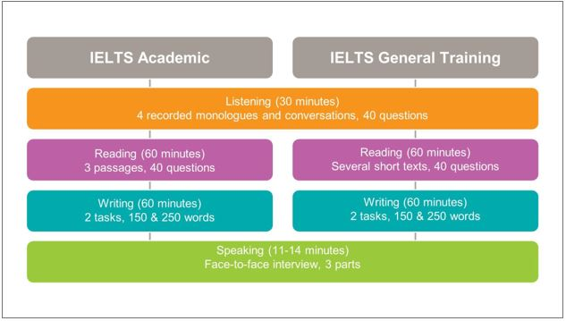

IELTS preparation
Learn the Basics About Preparing Your Students for IELTS
08 September 2021
Louisa Dunne
IELTS is the world’s most popular high-stakes English language test. Many students take IELTS to realize their academic and professional ambitions. In this post I will look at important points teachers should cover with students to help build their confidence and familiarity with IELTS to maximize their scores on the test day.
Academic Vs. General Training
To begin with, your students need to be clear about which IELTS they need, Academic or General Training, and by when they need their results. IELTS Academic is typically used for study in English-speaking environments or professional registration. IELTS General Training is used for migration purposes or for study at below degree level. IELTS scores are set by the receiving organizations, such as universities and immigration authorities, and are usually listed on university and government websites under language requirements.
What is the Difference Between IELTS on Paper and IELTS on Computer?
Students can choose whether to take IELTS on paper or IELTS on computer, where both are available. This is a personal choice – the content of the tests and the value of the scores are identical. If choosing IELTS on computer, students need to have done some IELTS on computer practice tests and be familiar with the system functionality and keyboard shortcuts (e.g., CTRL+ C). IELTS has several videos students can review to familiarize themselves with the computer features on our IELTS Official YouTube channel
How Much Study Time Do Students Need to Prepare for IELTS?
Students should also know where they are starting from (their current language level) and be realistic about the study time needed to improve their language skills to get the score they need. Taking the CEFR levels as a baseline - many students need a minimum of 120 hours of language study to progress from one CEFR level to the next, and this time increases the higher the level. IELTS’ popularity across the world is due in part to its reliability, so students need to have the corresponding language level. Repeatedly taking the test will not change their score, but improving their actual language level will help.
Build Students’ Familiarity of the Format of IELTS
Being familiar with the format of IELTS is essential, including knowing the timing, the number of sections and the types of questions and task types, as it builds students’ confidence. Ensure your students have done some IELTS practice tests before their actual test. These are available on IELTS.org and on the free IELTS Prep App – remind your students to download the app and use the resources there. Doing practice tests allows students to identify the skills they need to improve to get the score they need.

Tips for Preparing Students for the IELTS Listening Test
In the IELTS listening test, time is given to preview the questions before the audio starts. Your students need to use this time wisely to look for clues to work out who the speakers are and the context. This will help them know what to expect and give them time to use their knowledge of the world to predict the type of information they will hear. It’s also useful to recommend students underline key words in the questions and look at the gaps to predict the type of information or the type of words needed. This keeps them focused and can help reduce exam nerves.
Students need relevant listening practice. Useful sources include radio and television discussion programs, podcasts, and Ted Talks. As IELTS is a test of international English, students need to be familiar with a variety of accents including British, American, Australian and Canadian.
Tips for Preparing Students for the IELTS Reading Test
In the IELTS reading test the students need to deal with around 2700 words and answer 40 questions in one hour. Students should adhere to the timing, 20 minutes for each passage. It is important that they only read the parts of the texts they need to answer the questions, so reading skills, like skimming and scanning, which allow the students to quickly locate the parts of the texts they actually need to read, are essential. Students need to learn different strategies for different question types, and help building their vocabulary. Direct students to an Academic Word List if they are preparing for IELTS academic.
Tips for Preparing Students for the IELTS Writing Test
For IELTS academic writing, students will need to know the format for their responses and the specific language to describe changes in graphs. Some may need support in developing their visual literacy to be able to read the diagrams easily. For writing Task 2, help your students analyse the questions so they answer appropriately. A standard essay format will include a clear introduction, body paragraphs with topic sentences and a short conclusion. Ensure your students are familiar with the public band descriptors for both writing tasks. You can use these to identify the areas they need to improve.
Tips for Preparing Students for the IELTS Speaking Test
For IELTS speaking, ensure familiarity with the format and types of tasks and use the public band descriptors as a guide. Students need practice in all three parts of the test, particularly in building up gradually to the 2-minute monologue in Part 2, and working on increasing fluency and confidence. Make sure your students also watch the sample videos on the site and record themselves and listen back, identifying where they need to improve.
Remember that students need both the language skills to get the score they require and familiarity with the test and what is expected. Make sure your students get lots of relevant practice and use our free resources to help them get the scores they need to realize their ambitions.
About the Author
Louisa Dunne is an EFL teacher and Global IELTS teacher trainer, working as an examinations academic support manager at the British Council Paris. Her job involves providing support to teachers working in higher education, and secondary and adult teachers preparing students for various English language exams. Louisa has many years’ experience of teaching English to different age groups, from primary to adult. She has taught in Europe, South Asia, the Middle East and the Far East and has worked with teachers around the world, creating training programmes for IELTS test takers, teachers, and IELTS teacher trainers worldwide.